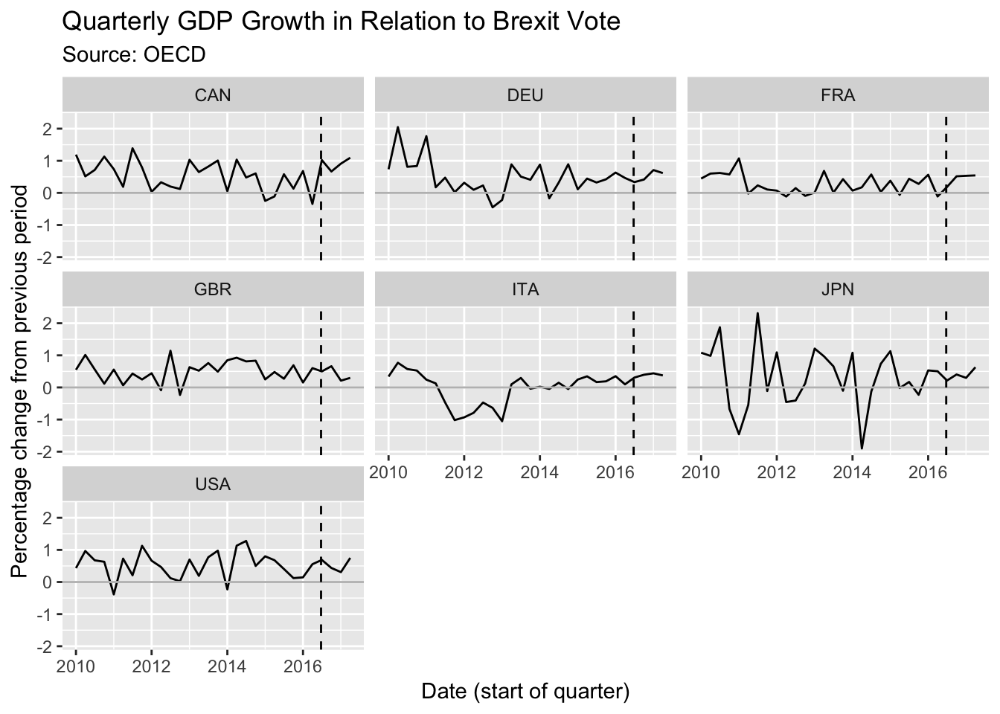
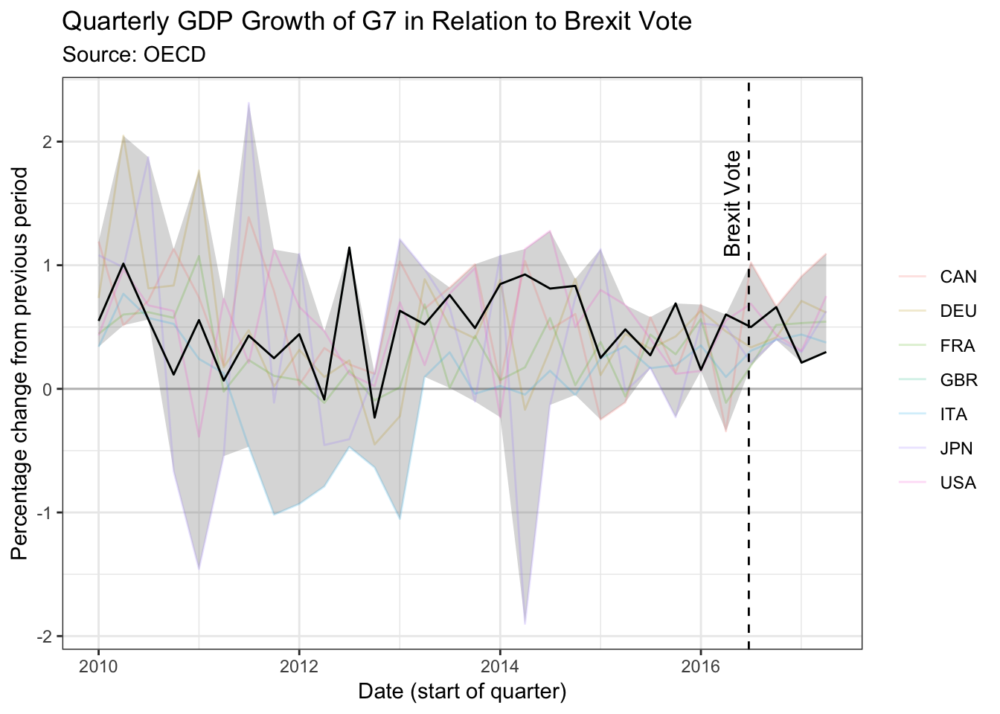

Chapter 9 Brexit
This visualization challenge was a proposed makeover for a Financial Times visualization focusing on relative economic growth in G7 countries, with an emphasis on growth in the UK, focusing especially since Brexit. The visualization I present here is not what I created at the time of the challenge; instead it is inspired by Alan Smith a data journalist at the Financial Times, who created a really compelling visualization a couple of months after MakeoverMonday’s treatment. I try to recreate his plot - which uses a ribbon to contain all G7 countries, and plot the UK’s stats thereover. This declutters the graph, and makes you focus on where the UK falls among other countries, without being needlessly specific about those countries; the data story isn’t about them anyway, might be Smith’s thinking. My graph actually lightly traces economic growth in other countries, but deemphasizes their importance, like Smith.
A random sample from the data set:
| Country | Year | Quarter | Date (start of quarter) | Percentage change from previous period | Date (start o quarter) |
|---|---|---|---|---|---|
| USA | 2013 | 3 | 2013-07-01 | 0.771183 | 2013-07-01 |
| ITA | 2014 | 3 | 2014-07-01 | 0.146421 | 2014-07-01 |
| ITA | 2014 | 2 | 2014-04-01 | -0.046314 | 2014-04-01 |
| USA | 2011 | 4 | 2011-10-01 | 1.126416 | 2011-10-01 |
| GBR | 2015 | 2 | 2015-04-01 | 0.480852 | 2015-04-01 |
ggplot(data = data) +
aes(x = `Date (start of quarter)`) +
aes(y = `Percentage change from previous period`) +
facet_wrap(~ Country) +
geom_line() +
geom_hline(yintercept = 0, col = "grey") +
geom_vline(xintercept = as.numeric(as.POSIXct("2016-06-23")), lty = "dashed") +
labs(title = "Quarterly GDP Growth in Relation to Brexit Vote") +
labs(subtitle = "Source: OECD")
A random sample from the data set:
| Country | Year | Quarter | Date (start of quarter) | Percentage change from previous period | Date (start o quarter) | min_ | max_ |
|---|---|---|---|---|---|---|---|
| CAN | 2011 | 3 | 2011-07-01 | 1.387897 | 2011-07-01 | -0.468615 | 2.312151 |
| FRA | 2012 | 2 | 2012-04-01 | -0.113871 | 2012-04-01 | -0.790043 | 0.466941 |
| FRA | 2015 | 1 | 2015-01-01 | 0.378716 | 2015-01-01 | -0.248989 | 1.129767 |
| FRA | 2016 | 1 | 2016-01-01 | 0.564609 | 2016-01-01 | 0.145036 | 0.681367 |
| FRA | 2012 | 4 | 2012-10-01 | -0.093296 | 2012-10-01 | -0.636122 | 0.125654 |
ggplot(data = data) +
aes(x = `Date (start of quarter)`) +
aes(y = `Percentage change from previous period`) +
aes(ymin = min_) +
aes(ymax = max_) +
geom_hline(yintercept = 0, col = "grey") +
geom_ribbon(alpha = .2) +
geom_line(aes(col = Country), alpha = .2) +
geom_line(data = data %>% filter(Country == "GBR"), col = "black") +
geom_vline(xintercept = as.numeric(as.POSIXct("2016-06-23")), lty = 2) +
annotate(
geom = "text", x = as.POSIXct("2016-04-23"), y = 1.5,
label = "Brexit Vote", angle = 90
) +
labs(
title = "Quarterly GDP Growth of G7 in Relation to Brexit Vote",
subtitle = "Source: OECD",
col = ""
) +
theme_bw()